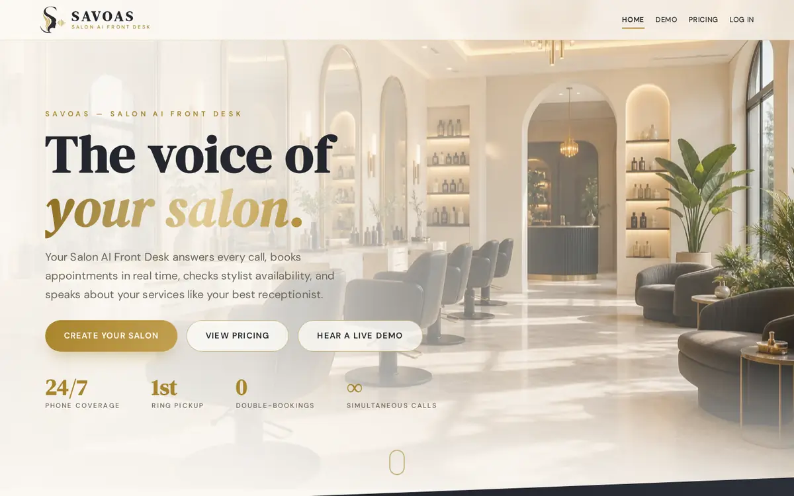
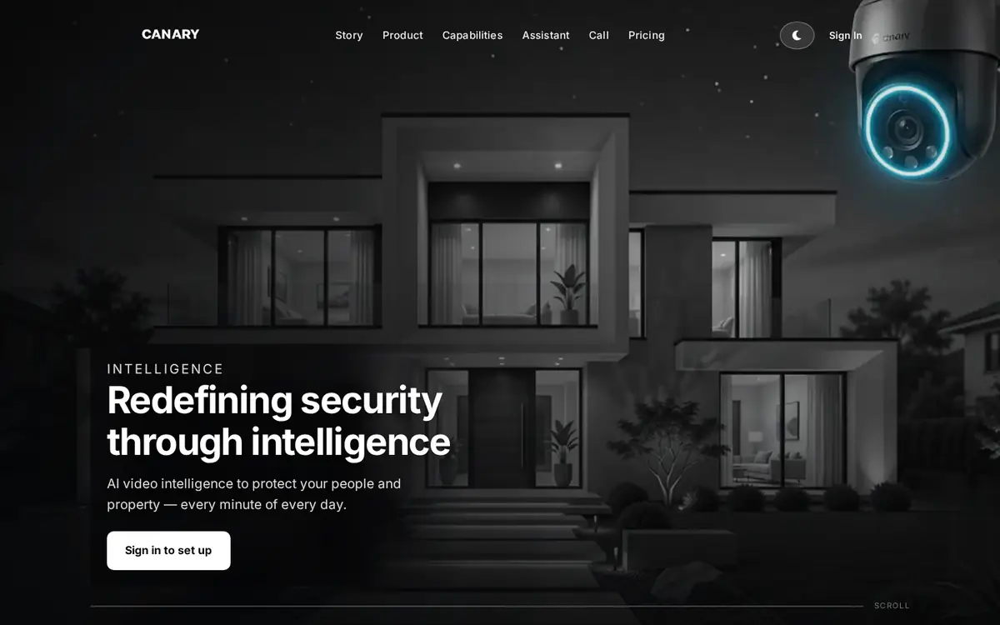
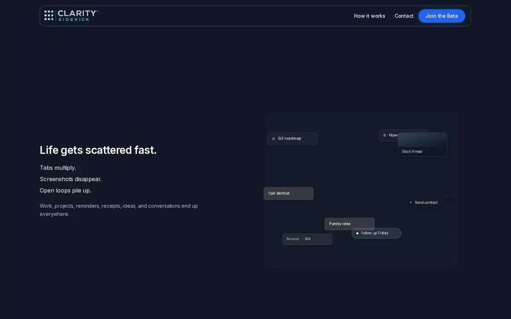
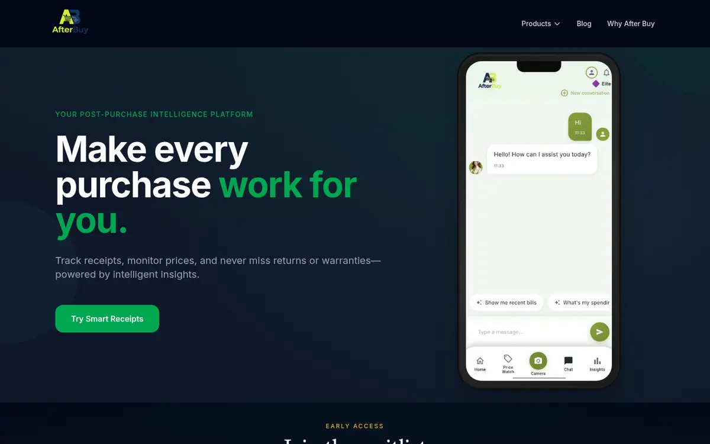
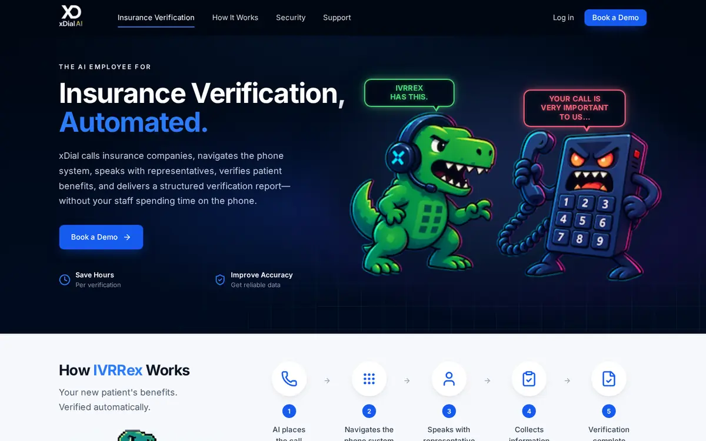

Senior Generative AI Engineer · LLM Orchestration · Multimodal AI · RAG · Voice AI · Computer Vision
Building reliable AI systems that ship
Senior Generative AI Engineer at ClarityPath AI and Foundational Senior Generative AI Engineer at AreaProbe (SpeakCanary). I build production LLM tool-calling systems, RAG and persistent memory, multimodal video AI, real-time voice AI, and cloud-native apps across web, iOS, Android, and Smart TV. M.S. CS (Machine Learning) @ George Mason University.
- 8–12 concurrent camera streams · alerts in ~2–3 s
- Multimodal RAG over 10K+ frames · retrieval <1 s
- Voice AI · ~1.5–2.5 s end-to-end response latency
About
Skills
AI / LLM
RAG & Data
Vision & Voice
Engineering
Cloud & DevOps
Apps & Platforms
Projects

Savoas — AI Voice Agent
Real-time salon voice assistant using LangGraph model/tool loops, Groq GPT-OSS, FastAPI, Twilio/Telnyx, Pinecone, and Redis; 20+ booking and business-action tools for service lookup, availability, appointments, calendar operations, payments, and customer Q&A.

SpeakCanary
Multimodal video-intelligence platform processing 8–12 concurrent camera streams with near-real-time motion, person/custom-object, and facial-recognition detection, generating alerts in ~2–3 seconds; multimodal RAG over 10K+ video frames/images with retrieval under 1 second.

Clarity Sidekick
LangGraph model/tool loops on AWS Bedrock and Gemini with parallel tool execution, streamed responses, knowledge retrieval, and memory-aware conversations; real-time voice with ~1.5–2.5 s end-to-end response latency.

AfterBuy
Converts receipt photos into searchable purchase records and spending insights; receipt understanding and Q&A with AWS Bedrock + LLaMA 4 Scout, processing 1K+ receipt images at ~90–95% extraction accuracy for common fields; Flutter app for iOS and Android.

xDial
Healthcare voice/IVR infrastructure with C, WebSockets, WebAssembly, NVIDIA Parakeet / Nemotron, Twilio, Medplum, and PostgreSQL; AWS infrastructure (EC2 GPU workers, S3, KMS, SSM, private networking, Terraform) for secure speech and call-processing workloads.
Quarterlife
AI-assisted financial platform with Claude, LangGraph, structured tool calls, Plaid, FastAPI, and PostgreSQL/Supabase; financial scoring and scenario-testing engines plus React/TypeScript and Flutter iOS/Android apps, with safeguards for AI-generated financial outputs.
Resume
Dhanush Dabbiru
Summary
Senior Generative AI Engineer building production LLM tool-calling systems, RAG and persistent memory, multimodal video AI, real-time voice AI, and cloud-native applications across web, iOS, Android, and Smart TV. Experience across AI architecture, model orchestration, vector retrieval, backend APIs, computer vision, real-time speech, and production AWS deployment.
Experience
- Architected SpeakCanary, a multimodal video-intelligence platform processing 8–12 concurrent camera streams with near-real-time motion, person/custom-object, and facial-recognition detection, generating alerts in ~2–3 seconds.
- Built the computer-vision pipeline: OpenCV motion detection, YOLOv12n for person detection, YOLOE for custom detection, and InsightFace for facial recognition.
- Built multimodal RAG with S3 frame storage, Amazon Nova multimodal embeddings, Pinecone, AWS Bedrock, LLaMA 4 Scout, LangGraph, and FastAPI, indexing and searching 10K+ video frames/images with retrieval under 1 second; deployed across EC2/ECS and edge workers.
- Shipped web, iOS/Android, and Samsung Tizen / LG webOS TV apps; also built Ribbon AI services, Ribbon Images iOS, and Anacostia (Flask, MySQL, SQLAlchemy, OpenAI).
- Building Clarity Sidekick with LangGraph model/tool loops, AWS Bedrock, and Gemini: parallel tool execution, streamed responses, knowledge retrieval, and memory-aware conversations.
- Designed an 11-type durable-memory architecture with 9-source per-turn context assembly across DynamoDB, PostgreSQL, Pinecone + S3, and Redis; rolling summaries and memory caching cut repeated context/token usage by ~30–40%, with a 3-tier deduplication pipeline for memory writes.
- Built real-time voice services with Deepgram Nova-3, Cartesia Sonic-3.5, WebSockets/SSE, and FastAPI at ~1.5–2.5 s end-to-end response latency, with React/TypeScript and Flutter iOS/Android clients.
- Building AfterBuy, an AI receipt-management platform that turns receipt photos into searchable purchase records and spending insights (monthly spend, merchants, returns, warranties, purchase history).
- Built receipt understanding and Q&A with AWS Bedrock + LLaMA 4 Scout and FastAPI, processing 1K+ receipt images at ~90–95% extraction accuracy for common fields; shipped the Flutter iOS/Android app.
- Building healthcare voice/IVR infrastructure with C, WebSockets, WebAssembly, NVIDIA Parakeet / Nemotron, Twilio, Medplum, and PostgreSQL.
- Developed AWS infrastructure (EC2 GPU workers, S3, KMS, SSM, private networking, Terraform) for secure speech and call-processing workloads.
- Building an AI-assisted financial platform with Claude, LangGraph, structured tool calls, Plaid, FastAPI, and PostgreSQL/Supabase.
- Developed financial scoring and scenario-testing engines plus React/TypeScript and Flutter iOS/Android apps, with safeguards for AI-generated financial outputs.
- Built a real-time AI voice assistant using Deepgram STT/TTS, WebSockets, xAI Grok, Python, and Flask, with Google Calendar, SendGrid, and SerpAPI integrations.
Education
Skills
Independent AI Project
Certifications & Publications
Contact
Open to Senior Generative AI Engineer roles. Email or call anytime.